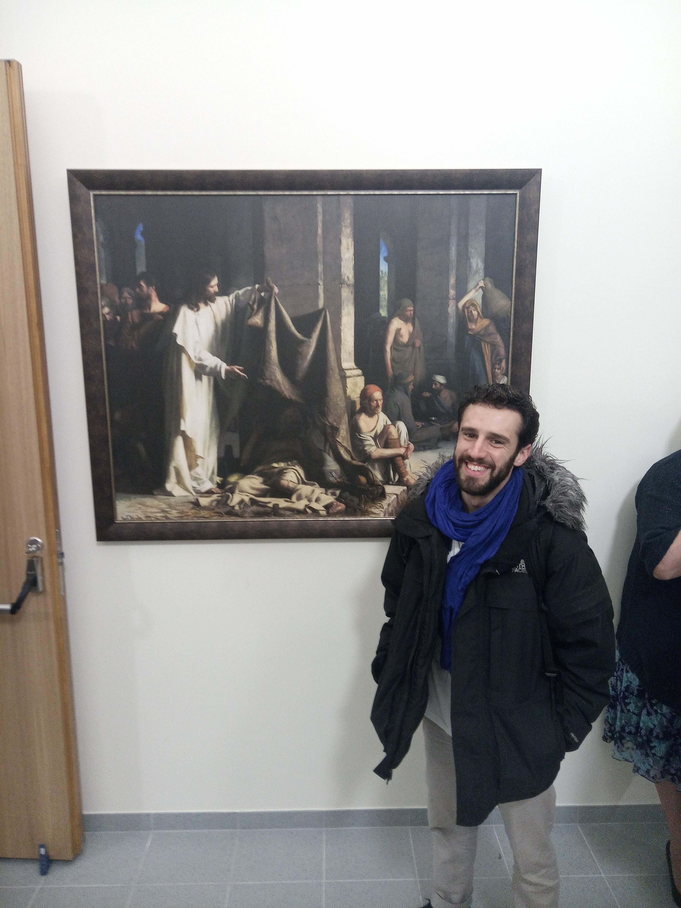

Spiritual touch. A journey to the depths of being.
2020-04-29
Prelude
Sunday, 27 of October of 2019
Fotografiska Restaurant, Telliskivi Loomelinnak, Tallinn, Estonia
14.35
Such a trip, brother. Such a trip.
So many things have happened that it is difficult to know where to start… Such a cliché, isn’t it?
I am more connected to my friends now, more connected to myself, more connected to the world, more connected to the universe, more connected to life.
I used to feel lonely, questioning what I was doing and towards where I was going. I used to feel purposeless, I used to be in dark places, living dark lives. I have seen a life now that I want to follow. I have seen a place that fills me with life and good energy. I am in a mood that resonates with who I am.
I was in contact with my shadow yesterday. I was ready to witness and participate in death, in violence, in killing, in pain, in suffering, in committing horrendous deeds. I was ready for it.
Now, I am ready for something else.
